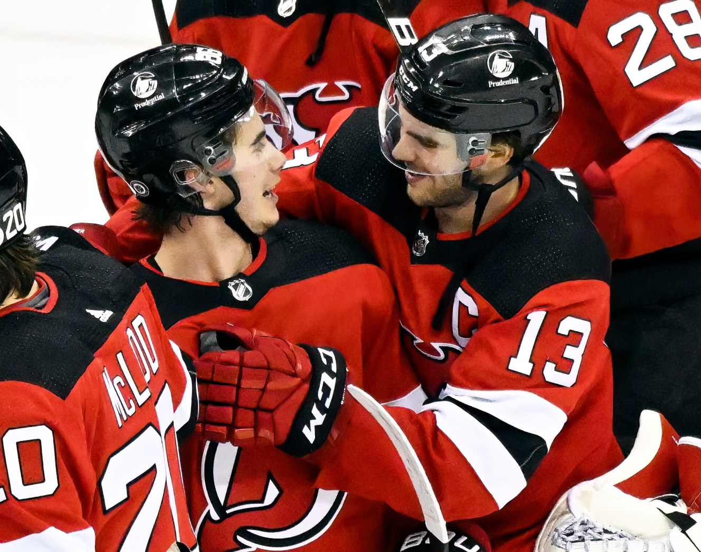

Why I Like Hockey & The New Jersey Devils
The Appeal of the Game
Ice hockey stands as the ultimate combination of speed, strategy, and pure physical skill. My deep appreciation for this game grew entirely from watching the high-velocity, high-stakes matches of the New Jersey Devils live inside the arena. The sheer speed of a live hockey game is unlike any other major professional sport. Players glide across the sheet at over twenty miles per hour while handling a small rubber puck with complete precision. The game transitions from defense to offense in fractions of a second, requiring intense focus and split-second decision-making from every player on the ice. The combination of heavy physical contact, complex tactical positioning, and raw individual athleticism makes it a beautiful sport to watch.
"Some people skate to where the puck is going to be. The New Jersey Devils play an up-tempo transitional style that captures exactly where the speed of modern hockey is headed."
3 Core Reasons the Devils Make Hockey Great
- Championship Identity: The franchise boasts a legacy built upon structured defensive play and legendary grit, resulting in three unforgettable Stanley Cup championship titles in 1995, 2000, and 2003. This proud history establishes a culture of hard work and winning that defines the team identity.
- The Rock Energy: Attending home matchups live at the Prudential Center in Newark provides an incredible fan experience. The arena layout keeps everyone close to the action, creating an intimate and thunderous environment where every hit and goal echoes through the seating bowl.
- Dynamic Elite Speed: Watching franchise centerpieces command the ice with explosive skating, crisp passing accuracy, and high-intensity attacking setups makes every single period thrilling to track. The modern team relies on creativity and fast breaks that keep opponents constantly off balance.
The Prudential Center Experience & Fan Culture
Beyond the historical record, it is the modern gameday tradition that keeps fans returning to Newark. The atmosphere builds long before puck drop, with fans gathering around Championship Plaza dressed in red and black. Once inside, the environment is engineered for true hockey enthusiasts. The arena fills with unique sensory traditions, from the deep resonance of the traditional arena pipe organ to the roaring horn that sounds after every home goal.
The fan base itself brings an immense amount of localized pride and community passion to the stands. Dedicated supporter groups like the "233 Crazies" and the rowdy sections behind the goals lead traditional crowd chants that rattle opposing goaltenders throughout the night. The iconic "NJ Devil" mascot adds to the fun, flying down the ice between periods, high-fiving fans in the concourses, and tossing t-shirts into the upper decks. It is this mix of intense hockey knowledge, multi-generational family loyalty, and pure garden state pride that makes attending a live match an unforgettable event.
Team Media & Fan Gallery

Prudential Center Game Night Rink Configuration

Nico Hischier & Jack Hughes Game Celebration